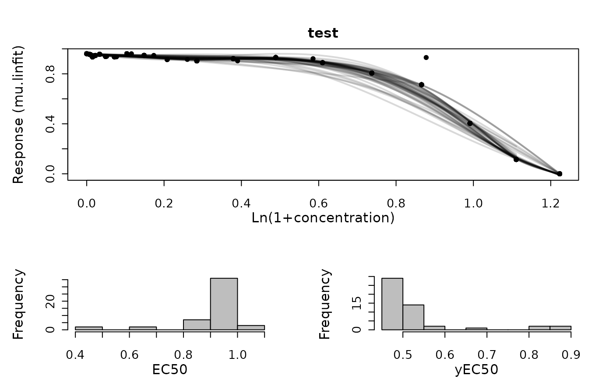

Generic plot function for gcBootSpline objects.
Usage
# S3 method for drBootSpline
plot(
x,
pch = 19,
colData = 1,
colSpline = "black",
cex.point = 1,
cex.lab = 1.5,
cex.axis = 1.3,
lwd = 2,
plot = TRUE,
export = FALSE,
height = 7,
width = 9,
out.dir = NULL,
combine = FALSE,
...
)Arguments
- x
A
drBootSplineobject created withgrowth.drBootSplineor stored within agrofitordrFitobject created withgrowth.workfloworgrowth.drFit, respectively.- pch
(Numeric) Shape of the raw data symbols.
- colData
(Numeric or Character) Color used to plot the raw data.
- colSpline
(Numeric or Character) Color used to plot the splines.
- cex.point
(Numeric) Size of the raw data points.
- cex.lab
(Numeric) Font size of axis titles.
- cex.axis
(Numeric) Font size of axis annotations.
- lwd
(Numeric) Spline line width.
- plot
(Logical) Show the generated plot in the
Plotspane (TRUE) or not (FALSE).- export
(Logical) Export the generated plot as PDF and PNG files (
TRUE) or not (FALSE).- height
(Numeric) Height of the exported image in inches.
- width
(Numeric) Width of the exported image in inches.
- out.dir
(Character) Name or path to a folder in which the exported files are stored. If
NULL, a "Plots" folder is created in the current working directory to store the files in.- combine
(Logical) Indicate whether both dose-response curves and parameter plots shall be shown within the same window.
- ...
Further arguments to refine the generated base R plot.
Examples
conc <- c(0, rev(unlist(lapply(1:18, function(x) 10*(2/3)^x))),10)
response <- c(1/(1+exp(-0.7*(4-conc[-20])))+stats::rnorm(19)/50, 0)
TestRun <- growth.drBootSpline(conc, response, drID = "test",
control = growth.control(log.x.dr = TRUE, smooth.dr = 0.8, nboot.dr = 50))
#> === Bootstrapping of dose response curve ==========
#> --- EC 50 -----------------------------------------
#>
#> Mean : 0.899544564649059 StDev : 0.0702732286376704
#> 90% CI: 0.89723257542688 90% CI: 0.901856553871239
#> 95% CI: 0.896789854086463 95% CI: 0.902299275211656
#>
#>
#> --- EC 50 in original scale -----------------------
#>
#> Mean : 1.45848317599923
#> 90% CI: 1.45280575499046 90% CI: 1.46417373832963
#> 95% CI: 1.451720085881 95% CI: 1.46526492215745
#>
print(summary(TestRun))
#> drboot.meanEC50 drboot.sdEC50 drboot.meanEC50y drboot.sdEC50y
#> 1 0.8995446 0.07027323 0.541395 0.09390099
#> drboot.ci90EC50.lo drboot.ci90EC50.up drboot.ci95EC50.lo drboot.ci95EC50.up
#> 1 0.7839451 1.015144 0.761809 1.03728
#> drboot.meanEC50.orig drboot.ci90EC50.orig.lo drboot.ci90EC50.orig.up
#> 1 1.458483 1.190095 1.759761
#> drboot.ci95EC50.orig.lo drboot.ci95EC50.orig.up
#> 1 1.142148 1.821532
plot(TestRun, combine = TRUE)
